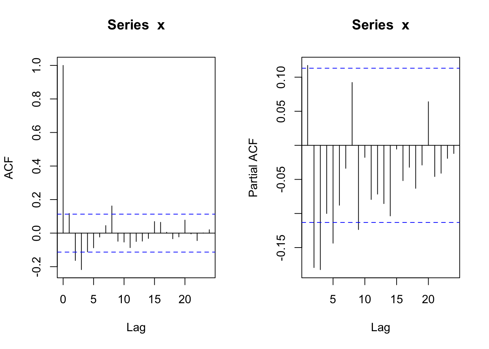
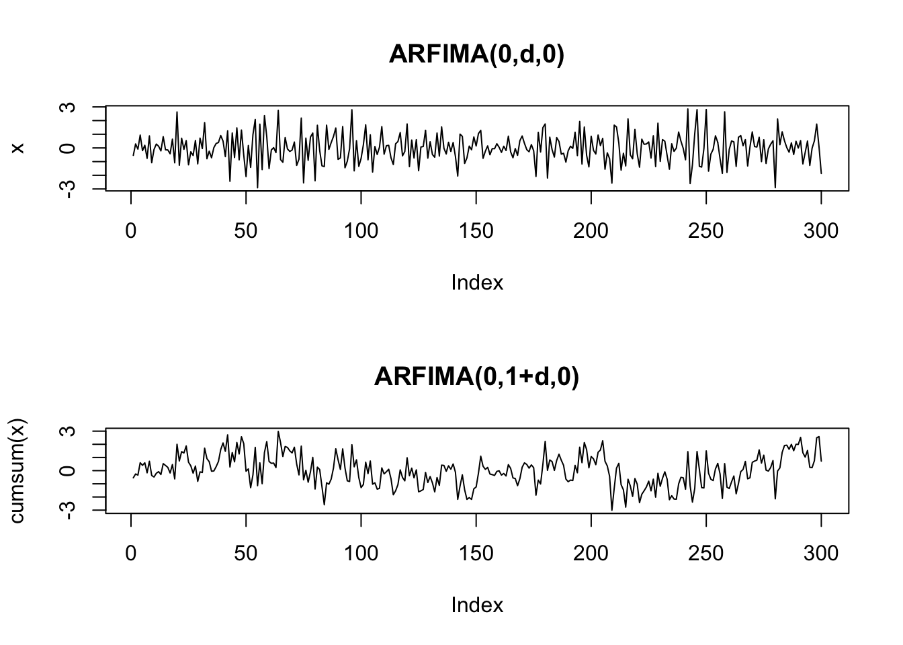
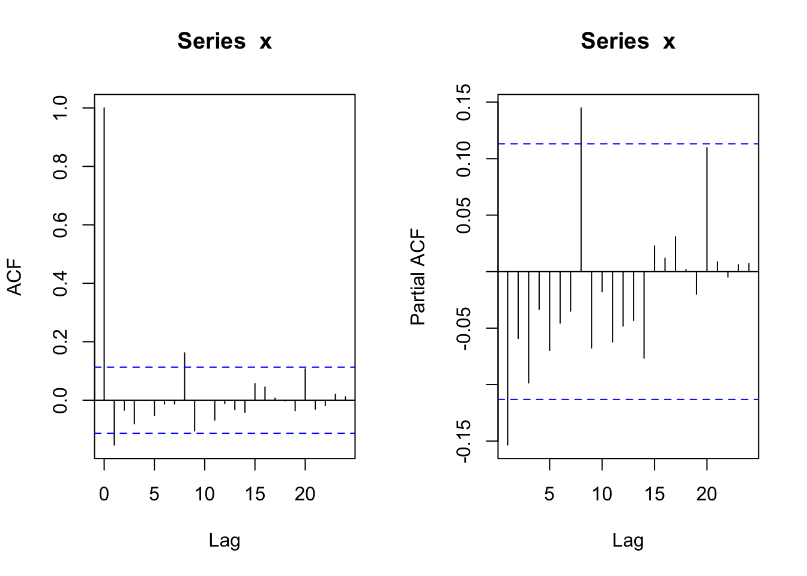

6 長期記憶過程
6.1 ARFIMA(p,d,q)過程のシミュレーション
- fracdiffパッケージの利用
- サンプルパス生成(1): p = 2, d = 0.49, q = 0
- 簡単のため, MA項入れず
Tlen = 300
Seedv = 100; set.seed(Seedv)
library(fracdiff)
fds_sim <- fracdiff.sim(Tlen, ar = c(0.7, -0.2), d = 0.49) # -0.5<=d<=0.5
x <- fds_sim$series # 長期記憶系列
plot(x, type = "l")

- サンプルパス生成(2): p = 2, d = 0.1, q = 0
set.seed(Seedv)
fds_sim <- fracdiff.sim(Tlen, ar = c(0.7, -0.2), d = 0.1)
x <- fds_sim$series # 長期記憶系列
plot(x, type = "l")

- サンプルパス生成(3): p = 2, d = -0.49, q = 0
set.seed(Seedv)
fds_sim <- fracdiff.sim(Tlen, ar = c(0.7, -0.2), d = -0.49)
x <- fds_sim$series # 長期記憶系列
plot(x, type = "l")

6.2 ARFIMA, fractional Gaussian過程のシミュレーション
- longmemoパッケージの利用
- ckARMA0(n, H)
- Compute the Autocovariances of a fractional ARIMA(0,d,0) process (d = H - 1/2).
- The theoretical formula, C(k) = (-1)^k Γ(1-2d) / (Γ(k+1-d) Γ(1-k-d)) ,
where d = H - 1/2, leads to over-/underflow for larger lags k;
hence use the asymptotical formula there.
- ckFGN0(n, H)
- Compute the Autocovariances of a fractional Gaussian process###########################################################
#install.packages("longmemo")
library(longmemo)
#data("NileMin") # Nile River Minima, yearly 622-1284
#nile <- NileMin
Seedv <- 1
Tlen <- 100; Hval <- 0.9
plot(ckARMA0(Tlen, H = Hval), type = "h")
# H > 0.5の時のみ
plot(x = 0:(Tlen-1), ckARMA0(Tlen, H = Hval),
type = "h", log = "xy",
main = paste0("Log-Log ACF for ARFIMA(0,d,0) with H = ", Hval))
# ckFGN0(n, H)
# Compute the Autocovariances of a fractional Gaussian process
plot(ckFGN0(Tlen, H = Hval), type = "h")
# (H > 0.5の時のみ)
plot(x = 0:(Tlen-1), ckFGN0(Tlen, H = Hval),
type = "h", log = "xy",
main = paste0("Log-Log ACF for frac. Gauss. Noise(H = ", Hval, ")"))
- simGauss: implements the method by Davies and Harte which is relatively fast using the FFT (fft) twice.
- To simulate ARIMA(p, d, q), (for d in (-1/2, 1,2), you can use arima.sim(n, model = list(ar= .., ma = ..), innov= simARMA0(n,H=d+1/2) , n.start = 0).
- simFGN.fft() is about twice as fast as simFGN0() and uses Paxson's proposal, by default via B.specFGN(*, k.approx = 3, adjust = TRUE).Seedv <- 1
set.seed(Seedv)
x1 <- simFGN0(Tlen, H = Hval)
x2 <- simARMA0(Tlen, H = Hval)
ts.plot(ts.union(x1, x2), col = 1:2, lty = 1:2,
main = paste0("frac. Gauss. Noise vs ARFIMA(0,d,0): H = ", Hval))
#ts.plot(cbind(x1, x2), col = 1:2, lty = 1:2)
fBM_path <- function(tlen = 100, H = 0.5, sd_val = 1) {
set.seed(sd_val)
cumsum(simFGN0(tlen, H))
}
#
plot(fBM_path(Tlen, Hval, Seedv), type = "l")
# 異なるHの値でのサンプルパスの比較
hvals <- c(0.5, 0.1, 0.8)
fBM1 <- fBM_path(Tlen, hvals[1], Seedv)
fBM2 <- fBM_path(Tlen, hvals[2], Seedv)
fBM3 <- fBM_path(Tlen, hvals[3], Seedv)
ts.plot(cbind(fBM1, fBM2, fBM3), col = c("black", "blue", "red"), lty = 1, lwd = c(1, 3, 3),
main = paste0("frac. Brownian Motions: H = ", paste(hvals, collapse = ",")))
6.3 Hurst指数の推定
- pracmaパッケージの利用
- hurstexp: R/S分析によるHurst指数推定
- 出力:
- Hs - simplified R over S approach
- Hrs - corrected R over S Hurst exponent
- He - empirical Hurst exponent
- Hal - corrected empirical Hurst exponent
- Ht - theoretical Hurst exponentlibrary(pracma)
data(brown72)
x72 <- brown72 # H = 0.72
xgn <- rnorm(1024) # H = 0.50
xlm <- numeric(1024); xlm[1] <- 0.1 # H = 0.43
for (i in 2:1024) xlm[i] <- 4 * xlm[i-1] * (1 - xlm[i-1])
plot(x72, type = "l")

hurstexp(brown72) # d: smallest box size (default = 50)
## Simple R/S Hurst estimation: 0.6628842
## Corrected R over S Hurst exponent: 0.7378703
## Empirical Hurst exponent: 0.6920439
## Corrected empirical Hurst exponent: 0.6577233
## Theoretical Hurst exponent: 0.5404756
hurstexp(xgn)
## Simple R/S Hurst estimation: 0.4784489
## Corrected R over S Hurst exponent: 0.4898617
## Empirical Hurst exponent: 0.5041802
## Corrected empirical Hurst exponent: 0.4636032
## Theoretical Hurst exponent: 0.5404756
hurstexp(xlm)
## Simple R/S Hurst estimation: 0.4762169
## Corrected R over S Hurst exponent: 0.4722421
## Empirical Hurst exponent: 0.4872281
## Corrected empirical Hurst exponent: 0.4460807
## Theoretical Hurst exponent: 0.5404756- fractalパッケージの利用
6.4 ARFIMAモデルの推定
6.4.1 最尤法
- 誤ってARモデルを選択した場合
set.seed(Seedv)
fds_sim <- fracdiff.sim(Tlen, ar = c(0.7, -0.2), d = -0.49)
x <- fds_sim$series # 長期記憶系列
#
(ar_fit <- ar(x, method = "mle"))
##
## Call:
## ar(x = x, method = "mle")
##
## Coefficients:
## 1 2 3 4 5 6
## 0.2060 -0.2321 -0.2082 -0.1717 -0.1534 -0.1875
##
## Order selected 6 sigma^2 estimated as 0.7814→ 大きい\(p\)を選択
AR係数, MA係数, 階差次数\(d\)を最尤推定 (以下, \(p=2\)を正しくしていたと仮定)
# nar=p, nma=q # AR, MAパラメーター数
(fds_fit <- fracdiff(x, nar = 2))
##
## Call:
## fracdiff(x = x, nar = 2)
##
## Coefficients:
## d ar1 ar2
## 4.583013e-05 3.478729e-01 -2.143891e-01
## sigma[eps] = 0.9577181
## a list with components:
## [1] "log.likelihood" "n" "msg" "d"
## [5] "ar" "ma" "covariance.dpq" "fnormMin"
## [9] "sigma" "stderror.dpq" "correlation.dpq" "h"
## [13] "d.tol" "M" "hessian.dpq" "length.w"
## [17] "residuals" "fitted" "call"→ 通常は\(p,q\)は未知 → 複数のnar, nmaを試すべき
nsarfimaパッケージの利用
library(nsarfima)
# nar = p, nma = q # AR, MAパラメーター数
(arfima.fit <- mle.arfima(x, p = 2))
## $pars
## mu sig2 d ar.1 ar.2
## -1.267263e-02 9.022758e-01 5.522776e-08 3.414323e-01 -2.625068e-01
##
## $std.errs
## mu sig2 d ar.1 ar.2
## 0.1016556 0.1395288 0.1733823 0.2163811 0.1612114
##
## $cov.mat
## sig2 d ar.1 ar.2
## sig2 0.019468294 0.00740705 -0.01170439 -0.004266261
## d 0.007407050 0.03006142 -0.03229578 -0.021628130
## ar.1 -0.011704389 -0.03229578 0.04682076 0.024479505
## ar.2 -0.004266261 -0.02162813 0.02447951 0.025989126
##
## $fit.obj
## $fit.obj$par
## d ar.1 ar.2
## 5.522776e-08 3.414323e-01 -2.625068e-01
##
## $fit.obj$value
## [1] 89.3253
##
## $fit.obj$counts
## function gradient
## 208 NA
##
## $fit.obj$convergence
## [1] 0
##
## $fit.obj$message
## NULL
##
##
## $p.val
## [1] 0.8912225
##
## $residuals
## [1] -0.6764961052 -0.2968632520 -1.2310910722 1.4561378726 -0.0388534504
## [6] -0.8423204011 0.4686722844 0.4643382756 0.4107973532 -0.4309650411
## [11] 1.4299789135 -0.0006787575 -0.7857763053 -2.3890626204 1.1014635252
## [16] -0.3966402031 0.1652482404 1.0616568645 0.7446050471 0.5154245086
## [21] 0.7564241338 0.4668174692 -0.2693729499 -2.3064083881 0.5227350640
## [26] -0.4642720829 -0.1309552624 -1.4100725427 -0.2774497899 0.4650877267
## [31] 1.4649891568 -0.0290343810 0.5782727746 -0.1757284573 -1.4912805335
## [36] -0.3789621380 -0.4655630075 0.0738483187 1.2914770769 0.8336925539
## [41] -0.0737873115 -0.2251819617 0.5774490180 0.3286308280 -0.8047251630
## [46] -0.6986673145 0.2958393665 0.6510135686 -0.1339248247 0.9675384987
## [51] 0.2259759735 -0.7281405491 0.2716268869 -1.3784731074 1.4943394505
## [56] 1.7164276897 -0.5272803532 -1.0201592423 0.3729804733 -0.5359889283
## [61] 2.3350415888 -0.4086512940 0.6924717331 -0.3606512486 -1.0759283895
## [66] -0.0506511539 -2.1101132511 1.5976097508 -0.1172982949 2.3325016401
## [71] 0.2254993256 -0.8129057325 0.3788283790 -1.4331970583 -1.3747001462
## [76] 0.2411732472 -0.5537230862 0.2049218798 0.2004499504 -0.4766722677
## [81] -0.4042575452 -0.0270582246 1.2728679869 -1.5304518129 0.9624356049
## [86] 0.2186716228 1.1235112273 -0.3688834767 0.4233844401 0.0726586865
## [91] -0.6954346528 1.1689570269 0.8808727109 0.5369119812 1.3879840390
## [96] 0.0879308998 -1.6719344153 -0.8630402713 -1.6381541198 -0.5431240556モデル診断/残差チェック方法の例
- 時系列データ\(x_t\)と\(d\)の推定値(初期値)があるとする
- 推定された\(d\)が正しい値ならば, \(Y_t=(1-B)^d X_t\)はARMA過程になるはず
- \(x_t\)より, パス\(y_t\)を(近似的に)生成する (get_fracdiff_ts関数使用. 配布のRコード参照)
- ARMAモデルを生成パス\(y_t\)に適合する. 得られる残差系列が白色ノイズか?
- (納得いくまで) 候補を変えて試す.
ここでは, AR(p)モデルに限定. 以下, 上で生成したパス\(x_t\), 得られた\(d\)の推定値をそのまま使用.
長期記憶過程xより非整数階差系列yを生成する関数 (以下で使用)
# 参考: Cowpertwait and Metcalfe(2009), Ch.8
get_fracdiff_ts <- function(x, d, L = 30){
# L: 項の打ち切り数
n <- length(x)
# fdc: (1-B)^dの2項展開係数ベクトルを生成
fdc <- d
fdc[1] <- fdc
for (k in 2:L) fdc[k] <- fdc[k-1] * (d+1-k) / k
# y, 非整数階差系列(fractionally differenced series)を生成
y <- rep(0, L)
for (i in (L+1):n) {
csm <- x[i] # x, 原系列（長期記憶過程)
for (j in 1:L) csm <- csm + ((-1)^j) * fdc[j] * x[i-j]
y[i] <- csm
}
y <- y[(L+1):n]
return(y)
}y <- get_fracdiff_ts(x, fds_fit$d) # {x_t}より非整数階差系列{y_t}を生成
(z.ar <- ar(y)) # ARモデルをフィット
##
## Call:
## ar(x = y)
##
## Coefficients:
## 1 2 3 4
## 0.2598 -0.0943 -0.1637 -0.2469
##
## Order selected 4 sigma^2 estimated as 0.8692
ns <- 1 + z.ar$order
z <- z.ar$res [ns:length(y)] # z.ar$resの最初のns個は欠損
par(mfcol = c(2, 2))
plot(as.ts(x), ylab = "x")
acf(x) ; acf(y) ; acf(z)
6.4.2 階差次数\(d\)の代替的推定法
- fracdiffパッケージ利用
- Geweke and Porter-Hudak(83), Reisen(94)
- 時系列データのperidogram (スペクトル密度の推定値) ベース
# library(fracdiff)
# Geweke and Porter-Hudak(83)の方法
(d_GPH = fdGPH(x))
## $d
## [1] -0.7167363
##
## $sd.as
## [1] 0.2935592
##
## $sd.reg
## [1] 0.2232167
# Reisen(94)の方法
(d_Sper = fdSperio(x))
## $d
## [1] -0.6491031
##
## $sd.as
## [1] 0.1334138
##
## $sd.reg
## [1] 0.08329104# GPH推定値の使用
y <- get_fracdiff_ts(x, d_GPH$d) # {x_t}より非整数階差系列{y_t}を生成
# ARMAモデルの適合に, forecastパッケージのauto.arima関数使用
library(forecast)
(y_fit <- auto.arima(y)) # ARモデルをフィット
## Series: y
## ARIMA(0,0,3) with zero mean
##
## Coefficients:
## ma1 ma2 ma3
## 0.8403 0.5521 0.2549
## s.e. 0.1171 0.1411 0.1297
##
## sigma^2 = 0.8098: log likelihood = -90.83
## AIC=189.66 AICc=190.27 BIC=198.65
y_resid <- y_fit$res
par(mfcol = c(1, 2))
acf(y_resid); pacf(y_resid)
Box.test(y_resid, lag = 30, type = "Ljung")
##
## Box-Ljung test
##
## data: y_resid
## X-squared = 17.267, df = 30, p-value = 0.9692- よりフォーマルなモデル同定・推定の手順は, 配布資料参照.
6.5 ARFIMAモデル: データ分析例 (Tsay, 2.11, pp.119–120)
- データ&コードの出所: https://sites.google.com/site/econometricsr/home/rcode
- コードは一部改
#library(fracdiff)
ifl <- file.path(dir_introTS, "d-ibm3dx7008.txt")
da = read.table(ifl, header = T)
head(da)
## Date rtn vwretd ewretd sprtrn
## 1 19700102 0.000686 0.012137 0.033450 0.010211
## 2 19700105 0.009596 0.006375 0.018947 0.004946
## 3 19700106 0.000679 -0.007233 -0.005776 -0.006848
## 4 19700107 0.000678 -0.001272 0.003559 -0.002047
## 5 19700108 0.002034 0.000564 0.002890 0.000540
## 6 19700109 -0.001353 -0.002797 -0.002923 -0.003021
ew = abs(da$vwretd) # daily abs ret's of value-weighted CRSP, 1970--2008
plot(as.ts(ew))
- 次数dの推定
# pure fractionally differenced modelに対して(p=0, q=0)
# Geweke-Porter-Hudak(83) estimate
#(m3 = fdGPH(da$vwretd)) # d=0.05282
(m3 = fdGPH(ew))
## $d
## [1] 0.372226
##
## $sd.as
## [1] 0.0698385
##
## $sd.reg
## [1] 0.06868857- → 0<d<0.5 ∴ stationary, invertible
# 最尤法 (nar, nmaの指定必要)
#m3.0 = fracdiff(ew,nar = 0, nma = 0) # デフォルト: nar = 0, nma = 0
#summary(m3.0)
# ARFIMA(1,d,1)の最尤推定
m2 = fracdiff(ew, nar = 1, nma = 1)
summary(m2)
##
## Call:
## fracdiff(x = ew, nar = 1, nma = 1)
##
## Coefficients:
## Estimate Std. Error z value Pr(>|z|)
## d 0.490938 0.007997 61.39 <2e-16 ***
## ar 0.113389 0.005988 18.94 <2e-16 ***
## ma 0.575895 0.005946 96.85 <2e-16 ***
## ---
## Signif. codes: 0 '***' 0.001 '**' 0.01 '*' 0.05 '.' 0.1 ' ' 1
## sigma[eps] = 0.0065619
## [d.tol = 0.0001221, M = 100, h = 0.0003742]
## Log likelihood: 3.551e+04 ==> AIC = -71021.02 [4 deg.freedom]
coef(m2)
## d ar ma
## 0.4909382 0.1133893 0.5758949
confint(m2)
## 2.5 % 97.5 %
## d 0.4752637 0.5066127
## ar 0.1016536 0.1251250
## ma 0.5642407 0.5875491- 注: MA係数の符号が, arima()の符号とは反対
| 2.5 % | 97.5 % | ||
|---|---|---|---|
| d | 0.4909382 | 0.4752637 | 0.5066127 |
| ar | 0.1133893 | 0.1016536 | 0.1251250 |
| ma | 0.5758949 | 0.5642407 | 0.5875491 |
- → dの値, 非定常境界(d=0.5)に近い
set.seed(101)
m2_sim <- fracdiff.sim(512, ar = coef(m2)["ar"], ma = - coef(m2)["ma"], d = coef(m2)["d"])
plot(as.ts(m2_sim$series))